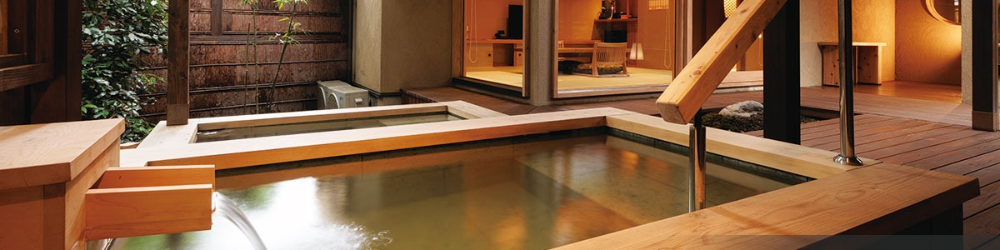

心に刻むくつろぎの空間 Silence at the foot of Aso —
an ease you carry with you. 阿苏山麓的静谧
铭刻于心的安憩之境
夜空にひろがる星斗の下で
阿蘇の地下1,000mから湧き上がる温泉をお楽しみ下さい Beneath flowers of the four seasons and a night sky wide with stars — enjoy the waters that rise from 1,000 metres below Aso. 四季更迭的花木、繁星漫布的夜空之下——请尽情享受涌自阿苏地下 1,000 米的温泉。
アルカリ性単純温泉 - 美肌の湯Simple Alkaline Spring — "Beauty Water"碱性单纯温泉 · 美肌之汤
肌触りが柔らかく肌への刺激が少ないのが特徴で、入浴すると肌がすべすべする感触があり角質を取る働きがあるため「美肌の湯」とも呼ばれます。 A soft, gentle bath with little skin irritation — the water leaves the skin smooth, gently exfoliating; locally known as the "water of beautiful skin." 触感柔和，对肌肤刺激极低。沐浴之后肌肤光滑，具轻柔去角质之效，故被誉为「美肌之汤」。
効能（浴用の適応症）Indications (bathing)功效（浴用适应症）
関節リウマチ／変形性関節症／腰痛症／神経痛／五十肩／打撲／捻挫／筋肉のこわばり／冷え性／末梢循環障害／胃腸機能の低下／軽症高血圧／耐糖能異常（糖尿病）／軽い高コレステロール血症／軽い喘息又は肺気腫／自律神経不安定症／病後回復期／疲労回復／健康増進 Rheumatoid arthritis · osteoarthritis · lower-back pain · neuralgia · frozen shoulder · bruises · sprains · muscle stiffness · poor circulation · mild digestive weakness · mild hypertension · impaired glucose tolerance · mild hypercholesterolemia · mild asthma or emphysema · autonomic instability · convalescence · fatigue recovery · general wellness. 类风湿关节炎／退行性关节炎／腰痛／神经痛／五十肩／挫伤／扭伤／肌肉僵硬／畏寒／末梢循环障碍／胃肠功能减弱／轻度高血压／糖耐量异常（糖尿病）／轻度高胆固醇血症／轻度哮喘及肺气肿／自律神经失调／病后康复／疲劳恢复／健康增进。
温泉成分表 ＜2020.03.17 測定＞Mineral analysis (2020-03-17)成分分析 （2020-03-17 检测）
| Na⁺ | 16.9 mg |
| K⁺ | 5.4 mg |
| Mg²⁺ | 6.8 mg |
| Ca²⁺ | 8.9 mg |
| HCO₃⁻ | 107.0 mg |
| Rn | 6.5 Bq/kg |
| H₂SiO₃ | 77.3 mg |
| pH | 8.0 |